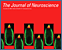
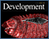
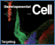
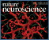
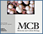

News Archives: Nov 1, 2003 - Jan 6, 2017
39 stories listed.
|  |
Sleeping With the Fishes
- Dec. 21, 2006
Although we spend a third of our life asleep, it ... Tags: 2006, Alexander Schier, Journal of Neuroscience, publication |
|
MCB Students Awarded Merck-Wiley Fellowships and Peralta Prize
- Dec. 15, 2006
Three MCB graduate students were recognized for their academic achievement ... Tags: 2006, Ernest Peralta Fund Award, Merck Genome-Related Research Awards, awards |
|
|
Pro Antibodies
- Nov. 29, 2006
In a paper appearing in the November 28, 2006 issue ... Tags: 2006, Axel Nohturfft, Proceedings of the National Academy of Sciences, publication |
|
|
Naoshige Uchida Goes in Search of the Mind
- Nov. 1, 2006
Naoshige Uchida, a neuroscientist and new Assistant Professor in MCB ... Tags: 2006, Naoshige Uchida, profile |
|
|
Victoria D'Souza: Using Structural Biology to Solve RNA
- Oct. 31, 2006
A new MCB Assistant Professor, D’Souza comes to Harvard ... Tags: 2006, Victoria D'Souza, profile |
|
|
TAP's Two-Cylinder Engine
- Oct. 6, 2006
Our experiments looked at the "engine" part of TAP, or ... Tags: 2006, Molecular Cell, Rachelle Gaudet, publication |
|
 |
Kevin Eggan 2006 MacArthur Fellow
- Sept. 19, 2006
MCB is pleased to announce that Kevin Eggan, Assistant Professor ... Tags: 2006, Kevin Eggan, MacArthur Fellow, awards |
|
David Baltimore to Deliver Bloch Lecture
- Sept. 15, 2006
On Friday, September 29, David Baltimore will deliver the 21st ... Tags: 2006, Bloch Lecture, lecture |
|
|
Switching off a Cell Cycle Checkpoint
- Aug. 7, 2006
Cell cycle checkpoints are surveillance mechanisms that ensure the ordered ... Tags: 2006, Andrew Murray, Science, publication |
|
|
Summer Outreach Program for Teachers Focuses on Evolution
- Aug. 3, 2006
Eighteen teachers from Massachusetts, New Hampshire, Maine, Rhode Island, and ... Tags: MCB Outreach Program, 2006 |
|
|  |
Bad to the Bone: Unlocking the Molecular Regulation of Osteoblast Differentiation and Bone Synthesis
- July 27, 2006
Bone can be produced by two distinct mechanisms: direct differentiation ... Tags: 2006, Andrew McMahon , Development, publication |
|
Rachelle Gaudet is Hooked on Crystallography
- July 27, 2006
Associate Professor Rachelle Gaudet has made gratifying progress on both ... Tags: 2006, Rachelle Gaudet, profile |
|
|
Mapping Evolution: Linking Adaptive Traits to Genomic Location
- July 25, 2006
Life exists in an impressive variety of forms, but the ... Tags: 2006, Andrew Murray, PLoS Biology, publication |
|
|
Hastings Awarded Farrell Prize
- July 7, 2006
Professor J. Woodland (Woody) Hastings has been awarded the 4th ... Tags: 2006, Peter C. Farrell Prize in Sleep Medicine, Woody Hastings, awards |
|
|
Mammalian Egg Progenitors Stay Put
- July 7, 2006
Recent reports have suggested that the mouse ovary might have ... Tags: 2006, Kevin Eggan, Nature, publication |
|
|
Natural Killers Have a Complex
- June 19, 2006
In our recent study (Krzewski et al., J Cell Biol ... Tags: 2006, Jack Strominger, The Journal of Cell Biology, publication |
|
|
Cold Spring Harbor Laboratory Honors Tom Maniatis
- June 7, 2006
Tom Maniatis has been awarded an honorary degree from Cold ... Tags: 2006, Cold Spring Harbor Laboratory, Tom Maniatis, awards, honorary degree |
|
|
Undergraduate Biochemical Sciences Prize Winners Announced
- June 7, 2006
For the first time since 2000, there are two winners ... Tags: 2006, Hoopes Prize, Lawrence J. Henderson Prize, Rachelle Gaudet, awards |
|
|
Meister Shows That the Eyes Have It
- June 1, 2006
MCB Professor Markus Meister has become a leading figure in ... Tags: 2006, Markus Meister, profile |
|
|
Translating the Language of Pheromones
- June 1, 2006
When animals meet, how do they distinguish friend from foe ... Tags: 2006, Catherine Dulac, Neuron, publication |
|
|
Florian Engert Receives a 2006 McKnight Scholar Award
- May 31, 2006
Florian Engert, Assistant Professor in the Department of Molecular and ... Tags: 2006, Florian Engert, McKnight Scholar Award, awards |
|
|
With Renewed Help From Howard Hughes, Richard Losick Invigorates Undergraduate Science
- May 15, 2006
What if a famous professor came to you and offered ... Tags: 2006, Howard Hughes Medical Institute (HHMI), Richard Losick, awards |
|
|  |
Splitting Hedgehog
- May 10, 2006
In their latest work, published in the journal Developmental Cell ... Tags: 2006, Developmental Cell, Sam Kunes, publication |
|
Clues to Sonic Hedgehog's Behavior
- May 10, 2006
The Hedgehog signaling pathway has emerged as a key regulator ... Tags: 2006, Andrew McMahon , Developmental Cell, publication |
|
|
The Science of Conflict: Second Annual MBB Graduate Student Conference
- May 1, 2006
The graduate student members of Harvard's Mind/Brain/Behavior ... Tags: 2006, Harvard's Mind/Brain/Behavior Initiative (MBB), symposium |
|
|  |
Staying Balanced Among the Chattering Class
- April 26, 2006
Neurons are constantly engaged in a chatter of synaptic transmission ... Tags: 2006, Nature Neuroscience, Venkatesh Murthy, publication |
|
Conflict and Cooperation: The Evolution of Social Interactions
- April 21, 2006
This Symposium, sponsored by the Genetics and Genomics Training Program ... Tags: 2006, Genetics and Genomics Training Program, symposium |
|
|
Florian Engert's Zebra Fish School
- April 18, 2006
Tadpoles don’t behave, but zebra fish do, and that ... Tags: 2006, Florian Engert |
|
 |
Microbial Sciences Initiative Symposium: April 29, 2006
- April 14, 2006
The Microbial Sciences Initiative (MSI) at Harvard is an interdisciplinary ... Tags: 2006, Microbial Sciences Initiative at Harvard, Microbial Sciences Symposium, symposium |
|
Correlated Neural Activity Dictates Changes in Visual Information Processing
- April 5, 2006
Although it is generally agreed that neural activity plays an ... Tags: 2006, Florian Engert, Neuron, publication |
|
|
Running Through Stop Signs
- March 28, 2006
One of the 10 biological commandments is "Thou shall keep ... Tags: 2006, Matthew Michael, The Journal of Cell Biology, publication |
|
|
2006 Merck Awards for Genome-Related Research Announced
- March 20, 2006
The 2006 Merck Genome-Related Research Awards were announced on February ... Tags: 2006, Merck Genome-Related Research Awards, Rachelle Gaudet, awards |
|
|  |
Validation of Polo-like Kinase 1 as a Cancer Therapy Target
- March 6, 2006
A new study from the Erikson lab by Xiaoqi Liu ... Tags: 2006, Molecular and Cellular Biology, Raymond Erikson, publication |
|
Axel Nohturfft: New Insights into Membrane Biology
- Feb. 21, 2006
To understand Axel Nohturfft’s fascination with cell membranes, think ... Tags: 2006, Axel Nohturfft, profile |
|
|
A New Function and Mechanism for MicroRNAs
- Feb. 21, 2006
Research by Antonio Giraldez, Alex Schier, and their collaborators now ... Tags: 2006, Alexander Schier, Science, publication |
|
|
An Unusually Simple Signal Transduction System
- Feb. 10, 2006
In this week’s Cell, Craig Ellermeier, Errett Hobbs, Eduardo ... Tags: 2006, Cell, Richard Losick, publication |
|
|
Breathing New Life Into the Life Sciences
- Feb. 6, 2006
Anyone who’s ever taken a freshman biology course in ... Tags: 2006, Andrew Murray, Erin O'Shea, Robert Lue |
|
|
A New Mechanism for Long-term Memory
- Jan. 13, 2006
We have provided a first glimpse of protein synthesis at ... Tags: 2006, Cell, Sam Kunes, publication |
|
|
Neural Tube Defects: Insights from Zebrafish
- Jan. 13, 2006
In this week’s Nature, Brian Ciruna, Alex Schier and ... Tags: 2006, Alexander Schier, Nature, publication |